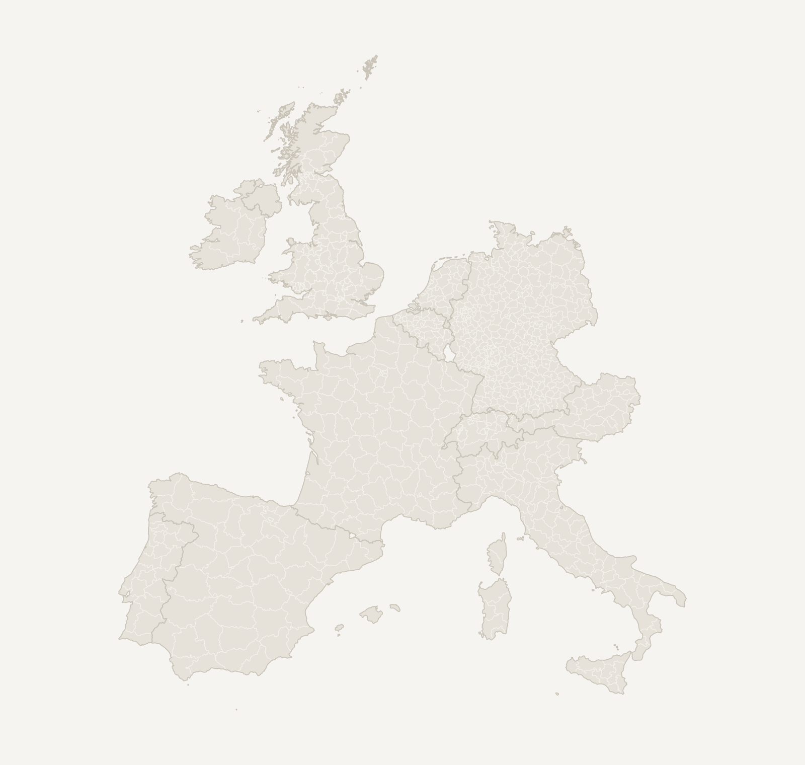
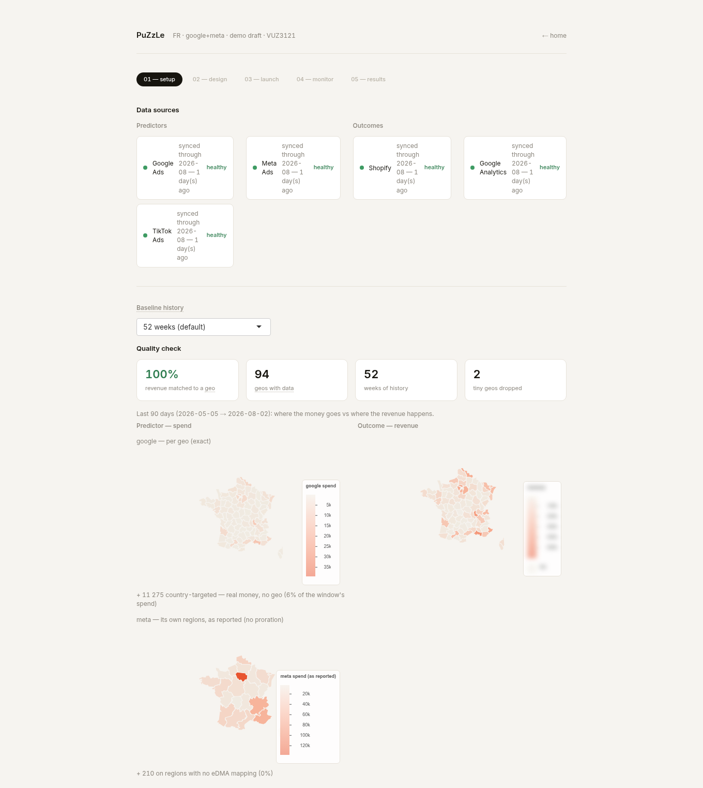
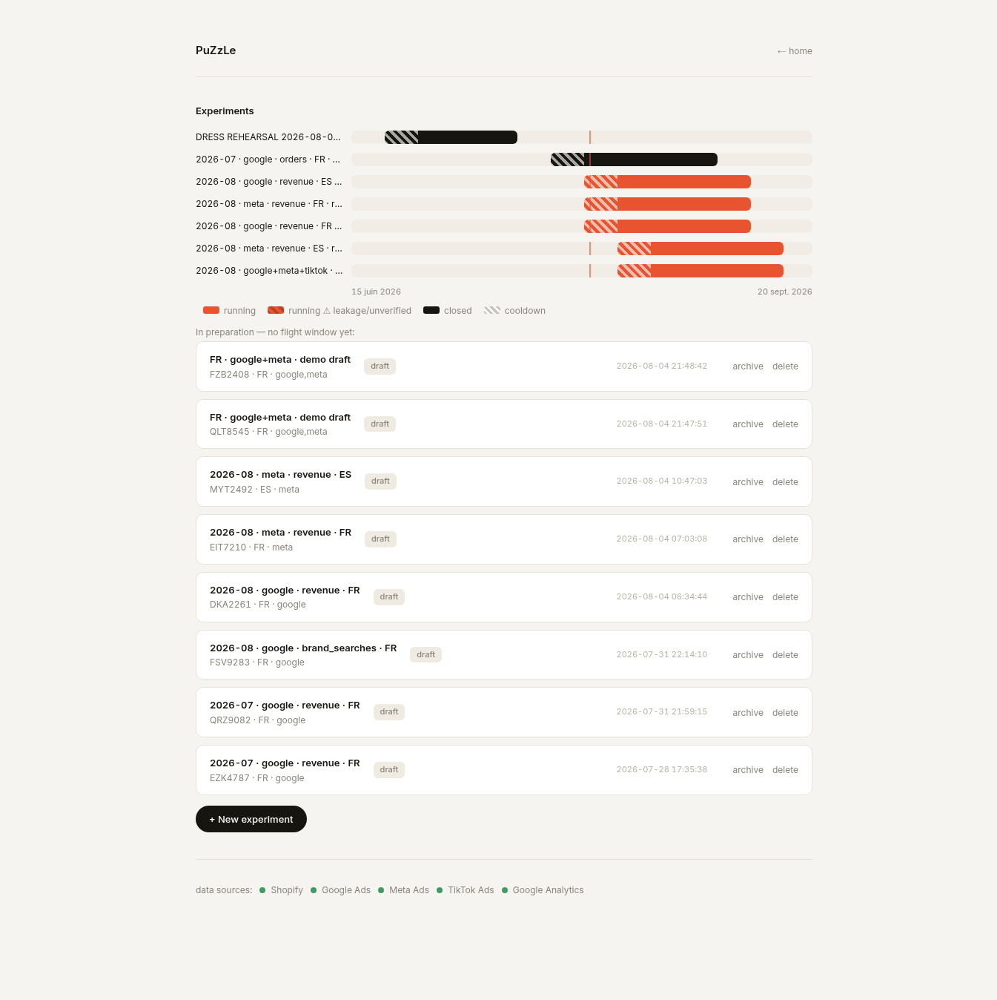
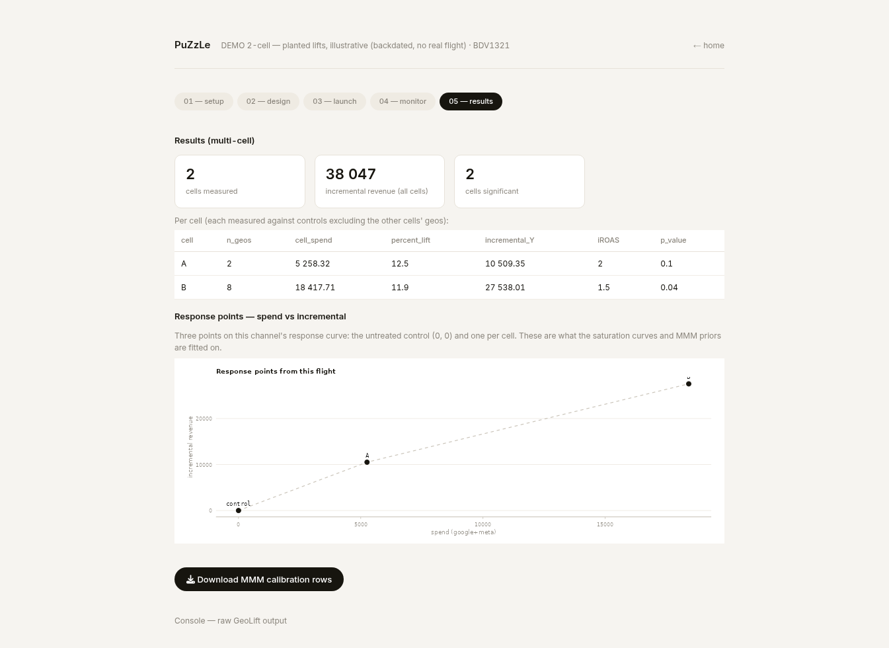
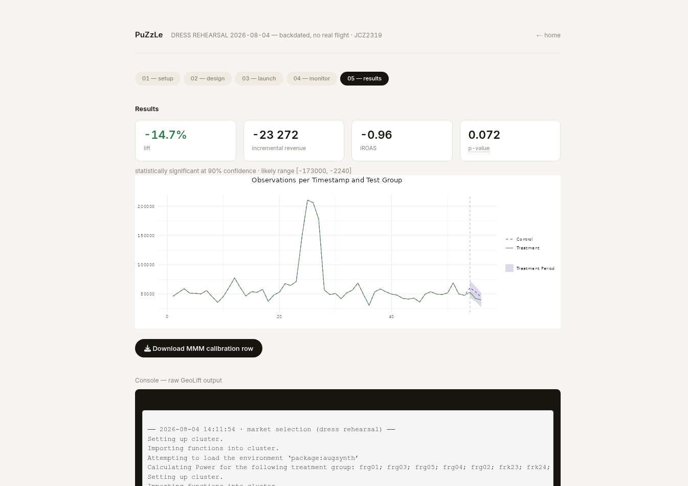

PuZzLe runs the experiment, on your sales data, across all your channels, and you walk into the budget meeting with a causal number. Engineered for European markets.

Modern measurement, without the operational burden
Good, keep running them. They're fast, free, and the right tool for tactical reads inside one platform. Then notice what they can never give you:
Use both, but only one is graded by someone other than the platform selling you the media.
In the US, geo-testing is a solved shape: 210 DMAs, every platform speaks them. In Europe, Meta targets French cities, or régions but on 2013 boundaries, Google speaks criteria IDs that mix several geographic levels and resist clean aggregation, TikTok has provinces with English exonyms, your orders carry postal codes, and in the UK, targeting, attribution and official geography are three different maps. This is where first geo-experiments die: regions that can be targeted but not measured, or measured but not targeted. First trustworthy readout: next quarter.
The eDMA layer covers Europe country by country, including a fully engineered UK, with every unit verified on two criteria at once: the platforms can execute it, your sales can be attributed to it. Designs are only ever proposed in units that pass both. The classic failure mode is not warned about; it is impossible by construction. The calendar time goes into the flight, not the plumbing.

One experiment is a verdict on one channel. The program turns verdicts into allocation:


PuZzLe runs on Meta's open-source GeoLift — augmented synthetic control, the academic standard for geo-incrementality: a weighted blend of untouched regions reconstructs what the test regions would have done, and the difference is the lift your spend caused. We add the guard rails the paper assumes and practice forgets: mandatory placebo tests, donor buffers against spillover, cooldowns for ad carryover, and every number on screen labelled exact or estimated.
